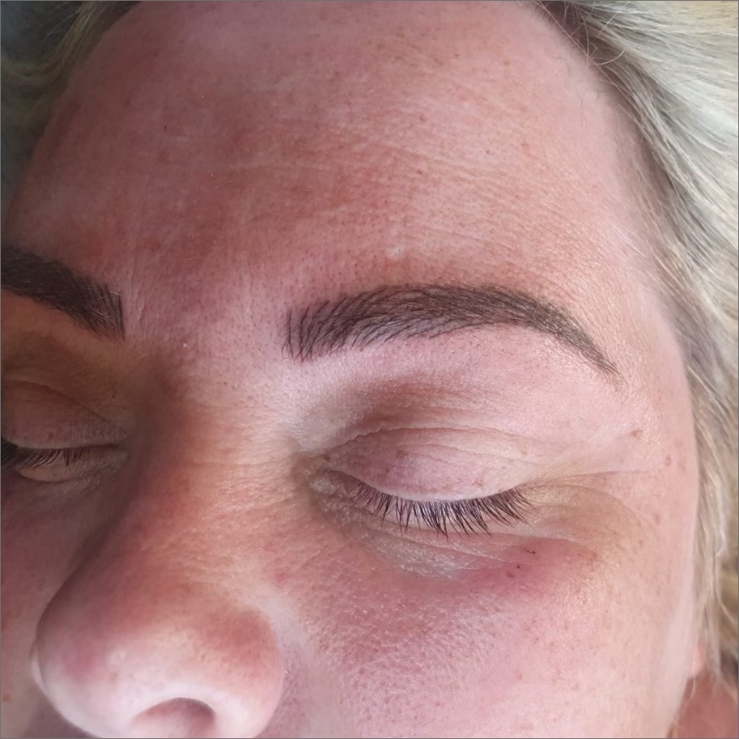

Microblading er til dig der ønsker så naturlige øjenbryn som muligt, da du med denne behandling får lavet de fineste og tyndeste hårstrå som definerer og udfylder dine allerede eksisterende bryn. Behandlingen foregår ved hjælp af specialproducerede nåle som deponeres i hudens øverste lag, og derfor kaldes den semipermanent da kroppen kan udstøde farven efter noget tid. Normalt holder denne semipermanente tatovering i minimum 1 år, og man skal derfor forvente at opfriske/vedligeholde brynene efter 1-2 år. Når brynene falmer kan de enten blive en smule rødlige eller grålige i farven, altafhængig af hvilket pigment der er blevet brugt, samt din egen underliggende tone.
Man kan også få lavet et fuldt optegnet bryn med maskine, som ikke er helt så naturligt som med microblading men mere makeup-agtigt. Der laves desuden læbekant og eyeliner samt vippefortætning med maskine.
Der kan ligeledes bestilles tid til vippebuk/lash lift med eller uden farve, som hører under mikropigmentering. Løftet/bukket samt farvningen holder mellem 6-8 uger.
Ved den klassiske permanente make-up benyttes en maskine med nåle i en klynge, og ved microblading benyttes et håndholdt værktøj hvor nålene sidder på række. Antallet af nåle og deres placering varierer efter hvilket udseende man ønsker på sine strøg. Ved både microblading og permanent make-up med maskine arbejder man i den samme dybde i huden. Hårstrå ved microblading laves ved at man dypper værktøjet med nåle ned i pigment og manuelt kører det ned i huden i strøg.
Der laves en optegning af begge bryn før behandlingen går i gang. Først optegnes det ene bryn (hvorefter du godkender det) og så kopieres optegningen over på det andet bryn i hånden via specielle teknikker. Selve formen på brynene vil derfor være identiske, men da hårstråene er håndlavede vil du kunne se meget lidt forskel på dine bryn. Derudover er dine naturlige bryn ikke ens – det ene bryn kan have mere fylde i et område end et andet, hvilket vil medføre at du her kan se flere microblading strøg, hvor strøgene vil være mere skjult i det mere fyldige bryn. Hvis der mangler fyld på et bryn efter opheling, vil dette rettes til ved en opfølgende behandling efter 4-6 uger.
Som udgangspunkt er én behandling ikke nok. Ved den første behandling kan der være lidt mellemrum mellem stregerne, hvilket man vil fylde ud ved den opfølgende behandling. Dette skyldes at brynet i løbet af behandlingen vil begynde at hæve op og det bliver svært at se den egentlige facon og mellemrum mellem strøgene. Forvent derfor at brynet vil se mere fyldigt ud efter 1-2 opfølgende behandlinger, end efter den første.
Ja, det kan du godt – vær dog opmærksom på at brynene er under heling. Du vil under helingsperioden få små sårskorper på dine bryn, der over 5-14 dage langsomt vil ryge af. Dette kan for nogle virke lidt voldsomt. Tag derfor dette med i dine overvejelser, når du bestiller en tid.
Nej, lige efter første behandling vil brynene være meget mørke og hævede. Indenfor 6-24 timer vil der opstå sårskorper, der tager op til 14 dage om at falde helt af. Det tager hævelsen 4-6 uger om at forsvinde helt. I denne periode skal man være tålmodig og se brynene an. Det er først ved en opfølgende behandling 4-6 uger efter 1. behandling, at der kan ses et endeligt resultat og laves eventuelle rettelser.
Som udgangspunkt kan alle få lavet permanent makeup, dog skal du være over 18 år og må ikke være gravid eller ammende. Har du evt. en permanent makeup i forvejen, kræver det at jeg ser disse førend jeg ved om jeg kan lave et flot resultat.
Efter behandlingen skal du være indstillet på at der vil være sår på dine nye bryn, eyeliner eller læber. Det tager 5-14 dage før sårene falder af, og i denne periode skal du igen tage visse forholdsregler. Disse vil du igen blive gjort opmærksom på inden behandlingen. Du skal være indstillet på at det kan kræve flere end én behandling før du har et færdigt resultat, og at du i en periode efter behandlingen vil have sårskorper der gradvist falder af i flager. Derudover må den behandlede hud ikke udsættes for direkte sol/solarie, mens helingen står på. Du vil se det endelige resultat 4-6 uger efter behandlingen – det er også her der udføres en genopfriskende behandling og IKKE før. Grunden til at vi venter 4-6 uger er, at sårene skal være fuldstændig helede og hævelsen være faldet helt ned. Permanent make-up kræver tålmodighed, men resultatet er det hele værd. Desuden skal du være omhyggelig med at smøre med vaseline i minimum 1 uge efter behandlingen.
Microblading inkl. efterbehandling
2500,-
Microblading opfriskning, efter max 6 uger
1250,-
Microblading genopfriskning, 3-12 mdr. efter (1 behandling)
1500,-
Microblading genopfriskning, efter 12 mdr. (forfra igen)
2500,-
Permanent makeup - Læber, inkl. efterbehandling indenfor 6 uger
3000,-
Læber genopfriskning, 1 behandling
2000,-
Permanent makeup - Eyeliner, inkl. efterbehandling indenfor 6 uger
2000,-
Eyeliner genopfriskning, 1 behandling
1700,-
Permanent Lash lift med farve
550,-
Permanent Lash lift uden farve
450,-
Retning af bryn
50,-
Retning af bryn inkl. farve
170,-
Farvning af bryn og vipper
125,-